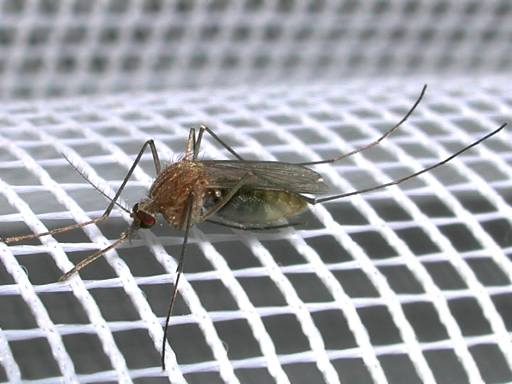
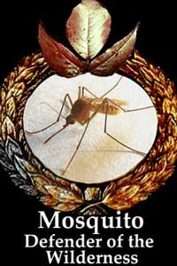
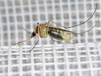

Комар на сетке

Макро простой камерой
Видны подробности устройства комара, Он кое-где прозрачный. Видно, что в животе у него, наверно, наша кровь. Место ещё осталось. На усиках (антеннах) видны волоски. Они помогают комару лучше чувствовать движение воздуха и запахи. Чтобы комар не улетел во время фотографирования, надо двигаться очень медленно.

Прозрачный живот самки комара
Фото сделано камерой Nikon cp880 с расстояния 4см. Комар сидит на вертикально висящей тюли у окна. Фотография повернута на 90 градусов.